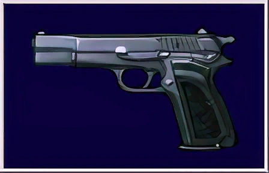

Descripcion
La Browning HP (High Power) es una pistola de 9mm que aparece en Resident Evil 2. Su cargador tiene capacidad para 13 balas.

La Browning HP (High Power) es una pistola de 9mm que aparece en Resident Evil 2. Su cargador tiene capacidad para 13 balas.